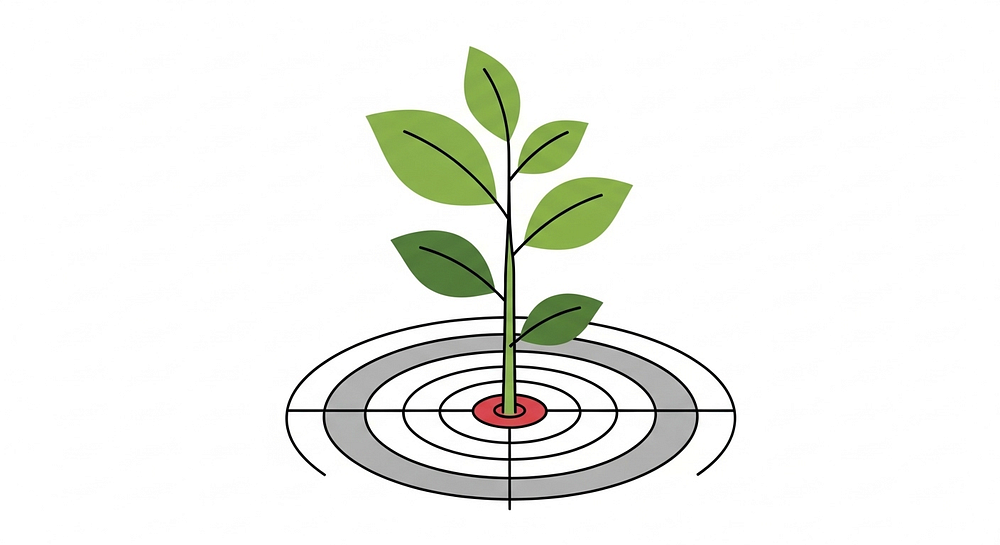
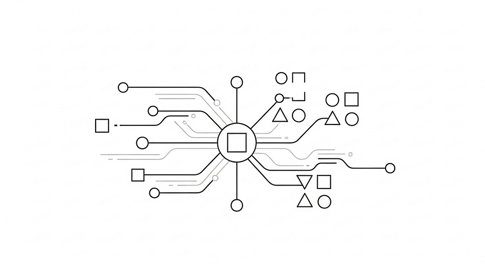
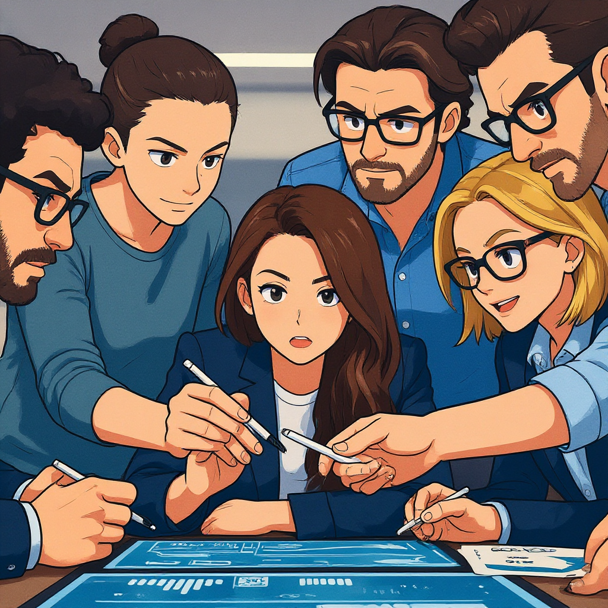
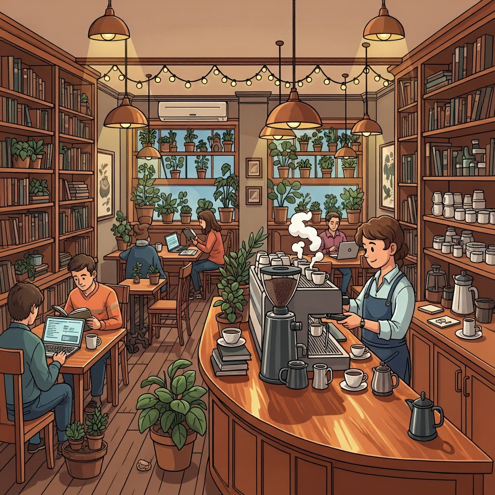
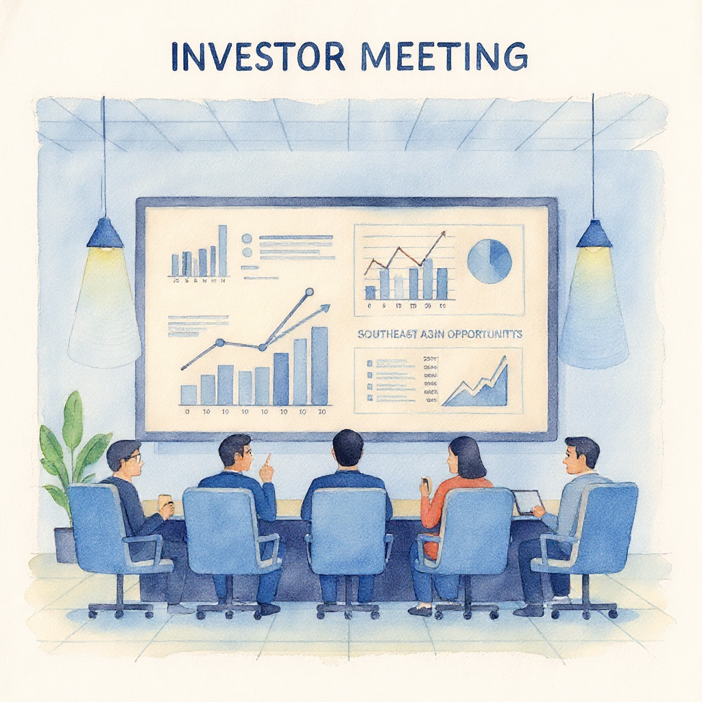
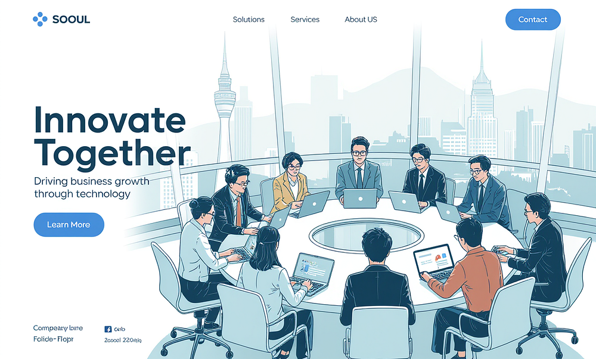

sistar company - *sc - sistar archives
sistar archives
Comprehensive corporate heritage, storybooks, visual identity archives, and foundational portfolio records of *sc (sistar company).
▫️ Greetings, Team SISTAR
Visual showcase and strategic documentation archive for Greetings, Team SISTAR within the Signal Star Universe (*sc).
▫️ SISTAR Company_Idendity
Visual showcase and strategic documentation archive for SISTAR Company_Idendity within the Signal Star Universe (*sc).


▫️ Welcome to SISTAR
Visual showcase and strategic documentation archive for Welcome to SISTAR within the Signal Star Universe (*sc).


▫️ SISTAR - a Signal Star
Visual showcase and strategic documentation archive for SISTAR - a Signal Star within the Signal Star Universe (*sc).








▫️ SISTAR Company
Visual showcase and strategic documentation archive for SISTAR Company within the Signal Star Universe (*sc).




▫️ SISTAR Story Book
Visual showcase and strategic documentation archive for SISTAR Story Book within the Signal Star Universe (*sc).
▫️ SISTAR Company _SISTAR Superior to
Visual showcase and strategic documentation archive for SISTAR Company _SISTAR Superior to within the Signal Star Universe (*sc).








▫️ Identity/ Signatures
Visual showcase and strategic documentation archive for Identity/ Signatures within the Signal Star Universe (*sc).
▫️ SISTAR List Projects
Visual showcase and strategic documentation archive for SISTAR List Projects within the Signal Star Universe (*sc).